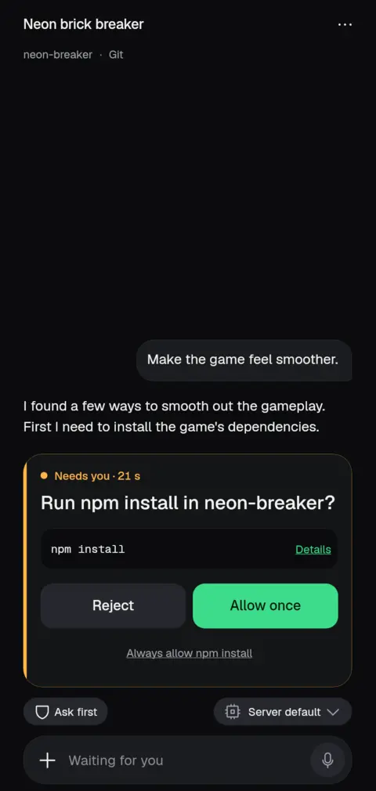
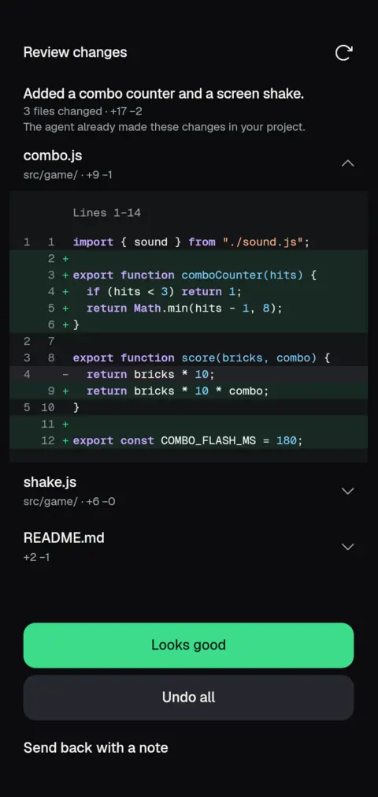

Unofficial, not affiliated with OpenCode, Anthropic, OpenAI or Google.
Claude Code on Android
OpenCode Mobile is an unofficial Android app that can run Claude Code on the phone itself, in a Linux the app installs, or connect to Claude Code on your computer. You get the conversation, approvals, diffs and a terminal on a small screen.
What it does
Claude Code is one of ten coding agents the app can run. Pick it per conversation, ask for a change in plain words, and watch it read files and run commands. When it wants to run something, the app asks you first, from a notification, the home-screen widget or the chat. You can also turn on auto-approve for a task you trust.
Every change shows up as a phone-sized diff you can step through before anything is committed.
How setup works
- Install the APK from GitHub Releases. Android asks you to allow installs from outside the Play Store.
- Choose On this phone. The app downloads Ubuntu, Git and Node, about 210 MB, and installs the agent. Use Wi-Fi.
- Pick Claude Code for a conversation and sign in with your Anthropic account or key. The app does not include a Claude subscription.
Prefer to keep the agent on a computer? Choose On my computer and connect to it; Claude Code on a computer connects through Paseo.
Limits to know
- Android 8 or newer. Running agents on the phone needs a 64-bit phone; about 2 GB of memory works, slowly.
- Installed from an APK, not the Play Store.
- Claude Code is among the best proven agents in the app, but it is still an agent running on a phone: Android can pause background work, so long jobs are not guaranteed to finish.
- You need your own Anthropic sign-in or key. OpenCode's free models need none.
Download
Version 2.1.0 (build 57). Free and open source under the MIT license. Most phones want arm64-v8a.
- arm64-v8a APK (most phones)
- Universal APK (works everywhere, larger)
- armeabi-v7a APK (older 32-bit phones; no on-phone Linux)
- All releases on GitHub
- Add to Obtainium to get updates


